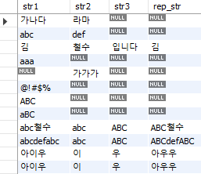
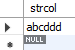

{kind=link}
{kind=link}
create database shop;SQL 기초
만일 수많은 데이터를 텍스트나 엑셀 파일로 관리할 경우 어떠한 단점이 있을까? 먼저 다수의 사람이 데이터를 공유하기 어려우며, 원하는 데이터가 있으면 매번 파일을 전송해주어야 하는 번거로움이 있다. 둘째로는 대량의 데이터를 다루기가 힘들다. 마지막으로 파일 삭제, 하드 디스크 고장, 보안 문제 등 사고에 대응하기가 어렵다. 이러한 이유로 실무에서는 대부분 데이터베이스를 이용해 데이터를 효율적으로 관리한다.
데이터베이스(database, DB)란 여러 사람이 공유하여 사용할 목적으로 체계화하여 통합, 관리하는 데이터의 집합이다. 예를 들어 티커, 주가, 재무제표, 목표주가 등 투자와 관련된 모든 데이터를 데이터베이스에 저장한 후 이를 관리하거나 사용할 수 있다. 데이터베이스 관리 시스템(database management system, DBMS)이란 다수의 사용자들이 데이터베이스 내의 데이터를 접근할 수 있도록 해주는 소프트웨어 도구의 집합이다. DBMS는 대량의 데이터를 다수의 사람이 안전하고 간단히 다룰 수 있게 해주는 장점이 있다.
DBMS 중 가장 일반적으로 사용되는 것이 관계형 데이터베이스(Relational Database)다. 이는 엑셀 시트처럼 열과 행으로 이루어진 2차원 표 형식으로써 데이터를 관리하거나 이해하기 쉽다. 또한 SQL이라는 전용 언어를 사용해서 데이터를 처리할 수 있다. 이러한 관계형 데이터베이스 관리 시스템 중 대표적으로 사용되는 것으로는 오라클 RDBMS, MS SQL Server, Postgre SQL, MySQL 등이 있으며 본 강의에서는 무료로 사용 가능한 MySQL을 살펴보도록 하겠다.
데이터베이스의 구성 요소
데이터베이스는 각각의 테이블로 이루어져 있으며, 테이블의 구성요소는 크게 다음과 같다.
- 열(컬럼): 테이블에 보관하는 데이터 항목이다.
- 행(레코드): 데이터 한 건에 해당하며, RDBMS는 반드시 행 단위로 데이터를 읽고 쓴다.
- 셀(값): 행과 열이 교차하는 하나의 값이며, 하나의 셀 안에는 하나의 데이터만 넣을 수 있다.
데이터베이스와 테이블 만들기
먼저 각각의 테이블이 저장될 데이터베이스(스키마)를 만들어 보도록 하자. MySQL Workbench를 열어 아래의 쿼리를 입력한다.
{kind=link}
create database [데이터베이스명]은 데이터베이스를 만드는 SQL 쿼리다. 쿼리를 실행하는 방법은 원하는 부분을 선택한 후 Ctrl + Shift + Enter(맥 사용자의 경우 Modifier + Shift + Return) 키를 누른다. SQL 쿼리문의 끝에는 세미콜론(;)을 붙이며, 대문자나 소문자는 구분하지 않는다. 단 테이블에 등록된 데이터는 대/소문자가 구분된다.
쿼리가 실행되면 하단의 [Action Output] 부분에 create database shop 이라는 문구가 뜨며, shop이라는 데이터베이스가 만들어졌음을 알 수 있다. 이를 확인할 수 있는 방법은 아래 그림과 같이 [Navigator]부분 하단에서 [Schemas]를 선택한 후 우측 상단의 새로고침 마크를 클릭하면 shop 데이터베이스가 생겼음이 확인된다.
{kind=link}
데이터베이스를 만들고 난 후에는 사용하고자 하는 데이터베이스를 지정해야하며, 이는 MySQL을 새로 열때마다 실행해야 한다.
use shop;use [데이터베이스명]; 쿼리를 통해 shop 데이터베이스를 사용할 것을 지정하였다.
이제 데이터베이스 하부에 테이블을 만들어보도록 하자. 테이블을 만드는 쿼리 형식은 다음과 같다.
create table <테이블명>
(
<열 이름 1> <데이터 형태> <이 열의 제약>,
<열 이름 2> <데이터 형태> <이 열의 제약>,
<열 이름 3> <데이터 형태> <이 열의 제약>,
….
<테이블의 제약 1>, <테이블의 제약 2>, ….
);위 형식에 맞춰 goods 테이블을 만들어주도록 한다.
create table goods
(
goods_id char(4) not null,
goods_name varchar(100) not null,
goods_classify varchar(32) not null,
sell_price integer,
buy_price integer,
register_date date,
primary key (goods_id)
);모든 열에 integer나 char 등의 데이터 형식을 지정해 주어야 한다. MySQL에서 사용할 수 있는 데이터 타입의 종류는 크게 CHAR, BINARY, TEXT, VARCHAR, BLOB, 숫자형 데이터 타입이 있으며, 입력되는 데이터에 맞는 타입을 설정한다. 또한 각종 제약을 설정해줄 수 있다. null이란 데이터가 없음을 의미하며, not null은 반드시 데이터가 존재해야 한다는 의미이다. 마지막으로 goods_id 열을 기본 키(primary key)로 지정해준다.
위 쿼리를 실행한 후 좌측의 SCHEMAS 부분에서 새로고침을 해보면, shop 데이터베이스의 Tables에 [goods]가 생성되며, Columns 부분에서 우리가 입력한 열들을 확인할 수 있다. 또한 열 이름을 클릭하면 하단의 Information 부분에서 해당 열의 데이터 타입 또한 확인할 수 있다.
{kind=link}
Note
데이터베이스나 테이블, 열 이름으로 사용할 수 있는 문자는 다음과 같다.
- 영문자(간혹 한글이 되기는 하나 추천하지 않음)
- 숫자
- 언더바(_)
테이블 정의 변경하기
테이블에 열을 추가로 만들거나 삭제를 해야하는 등 테이블의 정의를 변경해야 하는 경우 ALTER TABLE 문을 사용하면 된다. 먼저 열을 추가하는 쿼리는 다음과 같다.
alter table <테이블명> add column <열 이름> <열 정의>;shop 테이블에 goods_name이라는 열을 추가하며, 데이터 타입은 varchar(100)으로 설정하는 쿼리는 다음과 같다.
alter table goods add column goods_name_eng varchar(100);쿼리를 실행하고 SCHEMAS 부분에서 새로고침을 누르면 shop 데이터베이스 내 goods 테이블에 goods_name_eng 열이 추가된 것이 확인된다.
{kind=link}
반대로 열을 삭제하는 쿼리는 다음과 같다.
alter table <테이블명> drop column <열명>;이를 이용해 위에서 만든 goods_name_eng 열을 삭제하도록 한다.
alter table goods drop column goods_name_eng;쿼리 실행후 SCHEMAS 부분에서 새로고침을 누르면 goods 테이블에서 해당 열이 삭제된 것을 확인할 수 있다.
테이블에 데이터 등록하기
현재 goods 테이블은 아무런 데이터가 없는 빈 테이블 상태이므로, 데이터를 등록해주어야 한다. SQL에서 데이터를 등록하는 쿼리는 다음과 같다.
insert into <테이블명> values (값);아래 쿼리를 입력하여 goods 테이블에 데이터를 등록해주도록 한다.
insert into goods values ('0001', '티셔츠', '의류', 1000, 500, '2020-09-20');
insert into goods values ('0002', '펀칭기', '사무용품', 500, 320, '2020-09-11');
insert into goods values ('0003', '와이셔츠', '의류', 4000, 2800, NULL);
insert into goods values ('0004', '식칼', '주방용품', 3000, 2800, '2020-09-20');
insert into goods values ('0005', '압력솥', '주방용품', 6800, 5000, '2020-01-15');
insert into goods values ('0006', '포크', '주방용품', 500, NULL, '2020-09-20');
insert into goods values ('0007', '도마', '주방용품', 880, 790, '2020-04-28');
insert into goods values ('0008', '볼펜', '사무용품', 100, NULL, '2020-11-11');{kind=link}
쿼리가 제대로 실행되었으면 하단의 Output 부분이 위 그림과 같이 나타난다. 이 부분에서 SQL 초보자들에게 발생하는 대부분의 오류는 다음과 같다.
- 한 번 입력한 데이터를 다시 입력(Error Code: 1062. Duplicate entry ‘000x’ for key ‘goods.PRIMARY’ 오류 메세지 발생)
- 테이블 내 열의 갯수와 입력하는 데이터의 열 갯수가 같지 않음(Error Code: 1136. Column count doesn’t match value count at row 1 오류 메세지 발생)
이 외에도 발생하는 오류들은 하단의 Output 부분에 그 원인이 있으므로, 당황하지 말고 해당 메세지를 살펴보고 수정하면 된다.
SQL 기초구문 익히기
위에서 만든 테이블을 바탕으로 SQL에서 자주 사용되는 기초 구문들을 실습해보겠다.
select: 열 선택하기
테이블에서 원하는 열을 선택할 때는 select 문을 사용하며, 쿼리는 다음과 같다.
select <열 이름 1> , <열 이름 2>, … <열 이름 n>
from <테이블명>;goods 테이블 중 goods_id, goods_name, buy_price 열만 선택해보도록 하자.
select goods_id, goods_name, buy_price
from goods;{kind=link}
쿼리를 실행하면 하단의 [Result Grid]에 결과가 표시되며, 우리가 선택한 열만 표시된다. 만일 모든 데이터를 한번에 보고 싶다면 select * from <테이블명>; 형태로 입력하면 된다.
select * from goods;{kind=link}
as 키워드를 사용하면 열에 별명을 부여할 수도 있다. 만일 저장된 테이블의 열 이름이 길 경우 이를 모두 출력하면 직관적으로 내용을 이해하기 힘드므로 이름을 간결하게 변경하는 것이 나을 때도 있다. as 키워드를 사용하는 방법은 다음과 같다.
select <열 이름 1> as <별명>
from <테이블명>;이를 이용해 goods_id, goods_name, buy_price의 이름을 바꾼 후 출력해보도록 하자.
select goods_id as id,
goods_name as name,
buy_price as price
from goods;{kind=link}
select 구를 통해 단순히 현재 있는 열을 선택할 뿐만 아니라 상수 및 계산식도 작성이 가능하다. 아래 쿼리를 실행해보도록 하자.
select '상품' as category,
38 as num,
'2022-01-01' as date,
goods_id,
goods_name,
sell_price, buy_price, sell_price - buy_price as profit
from goods;{kind=link}
category, num, date 열에는 각각 상품, 38, 2022-01-01이라는 상수가 입력된다. 또한 sell_price - buy_price를 통해 두 열의 차이를 계산할 수 있으며, as 키워드를 통해 해당 열을 profit 으로 출력한다. 만일 별명을 부여하지 않을 경우 해당 열 이름은 계산식인 [sell_price - buy_price]가 그대로 출력된다.
distinct: 중복 제거하기
중복된 데이터가 있는 경우 중복되는 값을 제거하고 고유한 값만 확인하고 싶을 때는 distinct 키워드를 사용하며, 사용법은 다음과 같다.
select distinct <열 이름>
from <테이블명>;상품 분류에 해당하는 goods_classify 열에는 중복된 값들이 존재한다. 만일 상품 분류가 어떤 것이 있는지 고유한 값만을 확인하고 싶을 경우 아래 쿼리를 실행하면 된다.
select distinct goods_classify
from goods;{kind=link}
상품 분류 중 고유한 값인 의류, 사무용품, 주방용품만이 출력된다.
where: 원하는 행 선택하기
여러 데이터 중 조건에 부합하는 행만 선택할 때는 where 구를 사용하면 된다. 이는 엑셀에서 필터 기능과도 비슷하다. where 구는 from 구 바로 뒤에 사용해야 작동한다.
select <열 이름>, …
from <테이블명>
where <조건식>;테이블에서 상품 분류(goods_classify)가 의류인 데이터만 선택해보도록 하자.
select goods_name, goods_classify
from goods
where goods_classify = '의류';{kind=link}
여러 데이터 중 goods_classify가 의류인 데이터 2개(티셔츠, 와이셔츠)만 선택되었다.
연산자
연산자는 SQL 문에서 연산을 수행하기 위해 사용되는 사전에 예약된 단어 또는 문자로써 일반적으로 where 구 안에서 사용된다. 흔히 사용되는 연산자는 다음과 같다.
- 산술 연산자
- 비교 연산자
- 논리 연산자
산술 연산자
산술 연산자는 더하기, 빼기, 곱하기, 나누기 등 계산을 할 때 사용되는 연산자이다. 만일 판매가에서 구매가를 뺀 이익이 500 이상인 데이터만 선택하려면 다음과 같은 쿼리를 실행한다.
select *, sell_price - buy_price as profit
from goods
where sell_price - buy_price >= 500;{kind=link}
where 구문 내애 [sell_price - buy_price]를 계산하여 이익이 500 이상인 조건에 만족하는 데이터만을 선택하였다.
비교 연산자
비교 연산자는 데이터의 크기를 비교할 때 사용되는 연산자이며, 종류는 다음과 같다.
| 연산자 | 의미 |
|---|---|
| = | ~와 같다 |
| <> | ~와 같지 않다 |
| >= | ~ 이상 |
| > | ~ 보다 크다 |
| <= | ~ 이하 |
| < | ~ 보다 작다 |
sell_price가 1000 이상인 데이터만 선택하는 쿼리는 다음과 같다.
select goods_name, goods_classify, sell_price
from goods
where sell_price >= 1000;{kind=link}
숫자 뿐 아니라 날짜에도 비교 연산자를 사용할 수 있다. 등록일(register_date)이 2020년 9월 27일 이전인 데이터만 선택하는 쿼리는 다음과 같다.
select goods_name, goods_classify, register_date
from goods
where register_date < '2020-09-27';{kind=link}
논리 연산자
where 구 내에 and 연산자와 or 연산자와 같은 논리 연산자를 사용하면 복수의 검색 조건을 조합할 수 있다. 예를 들어 상품 분류가 주방용품이고 판매가가 3000 이상인 데이터를 조회하는 쿼리는 다음과 같다.
select goods_name, goods_classify, sell_price
from goods
where goods_classify = '주방용품'
and sell_price >= 3000;{kind=link}
두 조건을 모두 만족하는 데이터가 선택되었다. 만약 상품 분류가 주방용품이거나 판매가가 3000 이상인 경우처럼 여러 조건 중 하나만 만족해도 되는 경우를 검색하고 싶을 경우에는 or 연산자를 사용하면 된다.
select goods_name, goods_classify, sell_price
from goods
where goods_classify = '주방용품'
or sell_price >= 3000;{kind=link}
집약 함수
집약 함수란 여러 개의 레코드를 하나로 집약시키는 기능으로써, 대표적으로 사용되는 집약 함수는 다음과 같다.
| 함수명 | 의미 |
|---|---|
| count | 행 숫자를 계산 |
| sum | 합계를 계산 |
| avg | 평균을 구함 |
| max | 최댓값을 구함 |
| min | 최솟값을 구함 |
count: 행 숫자를 계산
count 함수는 행의 숫자를 계산한다. goods 테이블에 몇 개의 행이 있는 확인하는 쿼리는 다음과 같다.
select count(*)
from goods;{kind=link}
별표(*)는 모든 열을 의미하며 총 8개의 행이 있다는 것이 확인되었다. 그러나 이는 null이 포함된 행의 수이다. 만일 null을 제외한 행의 수를 계산하고자 할 때는 인수에 특정 열을 지정한다.
select count(buy_price)
from goods;{kind=link}
‘buy_price’ 열의 8개 데이터 중에는 총 2개의 null값이 있다. 따라서 count 함수를 실행하면 null을 제외한 6개의 행이 있음이 확인된다. 즉 count(*)는 null을 포함한 행의 갯수를, count(열 이름)은 null을 제외한 행 수를 계산한다.
sum: 합계를 계산
sum 함수는 특정 열의 합계를 계산하며, null 값은 무시하고 계산이 된다. sell_price와 buy_price 열의 합계를 구하는 쿼리는 다음과 같다.
select sum(sell_price), sum(buy_price)
from goods;{kind=link}
avg: 산술평균을 계산
avg 함수는 산술평균을 구하며, 사용법은 sum과 동일하다. sell_price 열의 평균을 구하는 쿼리는 다음과 같다.
select avg(sell_price)
from goods;{kind=link}
중복값 제외 후 집약함수 사용하기
만일 상품 분류가 몇 개가 있는지 확인하고 싶을 때는 어떻게 하면 될까? count 함수의 인자에 distict 키워드를 사용해 중복되지 않은 데이터의 갯수를 계산할 수 있다.
select count(distinct goods_classify)
from goods;{kind=link}
goods_classify 에는 의류, 사무용품, 주방용품 3개가 있으므로 이에 해당하는 값이 계산되었다. 이는 count 뿐만 아니라 sum(distinct 열 이름)과 같이 다른 집약함수에도 동일하게 적용이 가능하다.
그룹화와 정렬
데이터를 특정 기준으로 그룹을 나누어 값을 계산해야 하는 경우가 많다. 예를 들어 상품 분류 별 혹은 등록일 별 그룹을 나누어 손익을 계산한다고 생각해 보자. 이러한 경우 SQL에서는 group by 구를 사용하여 데이터를 그룹화할 수 있다. 또한 검색 결과를 특정 기준으로 정렬할 필요가 있을 경우 order by 구를 사용하면 된다.
그룹 나누기
{kind=link}
위 그림의 경우 category 별로 그룹을 나누어 평균을 계산하기 위해서는 데이터를 Blue, Green, Red 별로 그룹을 나누어 평균을 계산해야 한다. 이러한 그룹화 작업을 수행하는 구가 group by이며, 사용법은 아래와 같이 그룹을 나누고자 하는 열을 입력하면 된다.
select <열 이름 1>, <열 이름 2>, …..
from <테이블명>
group by <열 이름 1>, <열 이름 2>, ….상품 분류 별 데이터의 수를 계산하기 위한 쿼리는 다음과 같다.
select goods_classify, count(*)
from goods
group by goods_classify;{kind=link}
goods_classify 별로 그룹을 나눈 후 count(*)를 통해 각 그룹 별 행 갯수를 구할 수 있다. group by 구는 반드시 from 구 뒤에 두어야 한다. 이번에는 buy_price 별 행 갯수를 구해보도록 하자.
select buy_price, count(*)
from goods
group by buy_price;{kind=link}
buy_price 열에는 null 데이터도 포함되어 있으며, 이 역시 별도의 그룹으로 분류됨을 알 수 있다. 만일 where 구를 통해 조건에 맞는 데이터를 선택한 후 group by 구를 통해 그룹을 나눌때는 어떻게 해야 할까? 이 경우 where 구 뒤에 group by 구를 작성해야 한다. 상품 분류가 의류인 것 중 buy_price 별 데이터의 수를 구하는 쿼리는 다음과 같다.
select buy_price, count(*)
from goods
where goods_classify = '의류'
group by buy_price;만일 group by를 통해 나온 결과에 조건을 지정하려면 어떻게 해야 할까? 이 경우 where이 아닌 having 구를 사용해야 한다.
select <열 이름 1>, <열 이름 2>, …
from <테이블 명>
group by <열 이름 1>, <열 이름 2>, …
having <그룹값에 대한 조건>예를 들어 상품 분류별로 판매가의 평균을 구한 후, 이 값이 2500 이상인 데이터를 구하는 쿼리는 다음과 같다.
select goods_classify, avg(sell_price)
from goods
group by goods_classify
having avg(sell_price) >= 2500;{kind=link}
요약하자면 where는 group by 계산 이전, having은 group by 계산 이후 적용된다.
검색 결과 정렬하기
SQL에서는 결과가 무작위로 정렬되므로 쿼리를 실행할 때 마다 결과가 변한다. 오름차순이나 내림차순으로 결과를 정렬하고자 할 경우에는 order by 구를 사용한다.
select <열 이름 1>, <열 이름 2>, …
from <테이블명>
order by <재정렬 기준 열 1>, <재정렬 기준 열 2>, ...예를 들어 sell_price가 싼 순서, 즉 오름차순으로 정렬할 경우 쿼리는 다음과 같다.
select *
from goods
order by sell_price;{kind=link}
order by 구는 기본적으로 오름차순으로 데이터를 정렬한다. 만일 내림차순으로 정렬하고자 할 경우 재정렬 기준 뒤에 desc 키워드를 사용한다.
select *
from goods
order by sell_price desc;{kind=link}
뷰와 서브쿼리
기초구문 만으로는 복잡한 형태의 데이터분석을 하는게 한계가 있으며, 뷰와 서브쿼리를 이용하면 이러한 작업을 쉽게 할 수 있다.
뷰 만들기
뷰는 기본적으로 테이블과 거의 동일하다. 그러나 테이블과의 차이는 실제 데이터를 저장하고 있지 않다는 점이다. 뷰는 데이터를 저장하지 않고 있으며, 뷰에서 데이터를 꺼내려고 할 때 내부적으로 쿼리를 실행하여 일시적인 가상 테이블을 만든다. 즉, 데이터가 아닌 쿼리를 저장하고 있다고 보면 된다. 이러한 뷰가 가진 장점은 다음과 같다.
데이터를 저장하지 않기 때문에 기억 장치 용량을 절약할 수 있다.
자주 사용하는 쿼리를 매번 작성하지 않고 뷰로 저장하면 반복해서 사용이 가능한다. 뷰는 원래의 테이블과 연동되므로, 데이터가 최신 상태로 갱신되면 뷰의 결과 역시 자동으로 최신 상태를 보여준다.
뷰는 create view 문을 사용해 만들 수 있다.
create view 뷰 이름 (<뷰의 열 이름 1>, <뷰의 열 이름 2>, ...)
as
<쿼리>;만일 상품 분류 별 행 갯수를 매일 조회해야 한다면, 매번 쿼리를 실행하는 것 보다 뷰를 만들어 이를 확인하는 것이 훨씬 효율적이다. 아래의 쿼리를 통해 해당 뷰를 만들 수 있다.
create view GoodSum (goods_classify, cnt_goods)
as
select goods_classify, count(*)
from goods
group by goods_classify;{kind=link}
위 쿼리를 실행한 후 SCHEMAS 부분에서 새로고침을 눌러보면 Views 하부에 goodsum 이라는 뷰가 생긴것이 확인된다. 뷰의 데이터를 확인하는 방법은 테이블의 데이터를 확인하는 방법과 동일하다.
select *
from GoodSum;{kind=link}
뷰 삭제하기
뷰를 삭제하려면 drop view 뷰명 문을 사용한다.
drop view GoodSum;혹은 SCHEMAS 영역에서 삭제하고자 하는 뷰를 선택한 후 마우스 우클릭을 눌러 [Drop View]를 클릭해도 해당 뷰가 삭제된다.
{kind=link}
서브쿼리
서브쿼리란 쿼리 내의 쿼리이며, 일회용 뷰를 의미한다. 즉, 뷰를 정의하는 구문을 그대로 다른 구 안에 삽입하는 것이다. 먼저 뷰를 만든 후 이를 확인하는 쿼리는 다음과 같다.
create view GoodSum (goods_classify, cnt_goods)
as
select goods_classify, count(*)
from goods
group by goods_classify;
select * from GoodSum;이와 동일한 결과가 나오게 하는 서브쿼리는 다음과 같다.
select goods_classify, cnt_goods
from (
select goods_classify, count(*) as cnt_goods
from goods
group by goods_classify
) as GoodsSum;from 구 뒤의 괄호안에 해당하는 부분은 뷰를 만들 때 사용하던 코드와 동일하다. 즉, ① from 구 안의 select 문(서브쿼리)가 실행되고, ② 이 결과를 바탕으로 바깥쪽 select 문이 실행된다.
스칼라 서브쿼리
스칼라 서브쿼리란 단이 값이 반환되는 서브쿼리다. 이를 통해 =, <, > 등 비교 연산자의 입력값으로 사용할 수 있다. 예를 들어 판매단가가 전체 평균 판매단가보다 높은 상품만을 검색하려면 어떻게 해야할까? 먼저 평균 단가를 계산해야 한다.
select avg(sell_price)
from goods;{kind=link}
해당 쿼리를 서브쿼리에 넣어 원하는 값을 찾을 수 있다.
select *
from goods
where sell_price > (select avg(sell_price) from goods);{kind=link}
스칼라 서브쿼리는 where 구 뿐만 아니라 select, group by, having, order by 구 등 거의 모든 곳에 쓸 수 있다. 평균 판매가격을 새로운 열로 만드는 쿼리는 다음과 같다.
select goods_id, goods_name, sell_price,
(select avg(sell_price) from goods) as avg_price
from goods;{kind=link}
select 구문 내에 select avg(sell_price) from goods 쿼리를 입력하여 평균 판매가격을 계산한 후 이를 avg_price 라는 열 이름으로 출력한다.
이번에는 좀 더 복잡한 조건에 해당하는 데이터를 찾아보도록 하자. 상품 분류 별 평균 판매가격이 전체 데이터의 평균 판매가격 이상인 데이터만 출력하는 쿼리는 다음과 같다.
select goods_classify, avg(sell_price)
from goods
group by goods_classify
having avg(sell_price) > (select avg(sell_price) from goods);{kind=link}
먼저 group by 구문을 이용해 상품 분류 별 평균 판매가격을 계산한다. 그 후 having 구문 내에 전체 평균 판매가격을 계산하는 서브쿼리인 select avg(sell_price) from goods 를 입력하여 2097.5 라는 값을 계산하고, 그룹별 평균 판매가격이 이 값보다 큰 데이터만을 선택하게 된다.
함수, 술어와 case 식
SQL에서도 함수를 이용해 다양한 연산을 할 수 있으며, 다음과 같은 함수가 존재한다. 본 책에서는 수치 계산을 위한 ‘산술 함수’, 문자열 처리를 위한 ‘문자열 함수’, 날짜 처리를 위한 ’날짜 함수’에 대해 대해 알아보겠다. 또한 함수의 변형 형태인 술어는 반환 값이 진리값(TRUE/FALSE/UNKNOWN)인 함수라 볼 수 있다. 마지막으로 case 식 역시 함수의 일종으로써, SQL 내에서의 if문 이라고도 볼 수 있다. case는 조건에 해당하는 목록을 평가하고 가능한 여러 결과 식 중 하나를 반환한다.
산술 함수
산술 함수는 숫자형 데이터의 절대값, 올림, 내림, 반올림 등을 계산할 수 있게 해준다. 먼저 m, n, p 3개 열로 구성된 테이블(SampleMath)을 만들어 주도록 한다.
create table SampleMath
(m numeric (10,3),
n integer,
p integer);
insert into SampleMath(m, n, p) values (500, 0, NULL);
insert into SampleMath(m, n, p) values (-180, 0, NULL);
insert into SampleMath(m, n, p) values (NULL, NULL, NULL);
insert into SampleMath(m, n, p) values (NULL, 7, 3);
insert into SampleMath(m, n, p) values (NULL, 5, 2);
insert into SampleMath(m, n, p) values (NULL, 4, NULL);
insert into SampleMath(m, n, p) values (8, NULL, 3);
insert into SampleMath(m, n, p) values (2.27, 1, NULL);
insert into SampleMath(m, n, p) values (5.555,2, NULL);
insert into SampleMath(m, n, p) values (NULL, 1, NULL);
insert into SampleMath(m, n, p) values (8.76, NULL, NULL);{kind=link}
abs: 절대값 계산하기
abs 함수는 해당 열에 있는 값들의 절대값을 구해준다.
select m, abs(m) as abs_m
from SampleMath;{kind=link}
abs_m은 m열의 절대값을 계산한 것이며, 두번째 행을 보면 -180의 절대값에 해당하는 180이 계산되었다.
mod: 나눗셈의 나머지 구하기
7 나누기 3의 몫은 2이며 나머지는 1이다. mod 함수는 이 나머지에 해당하는 값을 구해준다.
select n, p, mod(n, p) as mod_col
from SampleMath;{kind=link}
mod(n, p)를 통해 n/p의 나머지를 구한다. 즉 7/3의 나머지인 1, 5/2의 나머지인 1이 계산되며, null은 계산이 불가한 데이터이므로 결과 역시 null로 나온다.
round: 반올림 하기
round 함수를 통해 반올림을 할 수 있으며, 몇 째자리에서 반올림을 할지 정할 수 있다. round(m, 2)의 경우 할 경우 m열의 데이터를 소수 둘째자리까지 반올림한다.
select m, n, round(m, n) as round_col
from SampleMath;{kind=link}
위의 쿼리는 m 열을 n 자리까지 반올림한다. n이 0인 경우 소수 0번째 자리, 즉 정수부분까지 반올림을 한다. n이 1인 경우에는 소수 첫째자리까지 반올림을 하기 위해 소수 둘째자리에서 반올림을 한다. round와 비슷한 함수로 올림에는 ceil, 내림에는 floor 함수가 있으므로 상황에 맞게 사용하면 된다
문자열 함수
문자열 함수는 문자 데이터를 처리할 때 사용되는 함수들이다. 먼저 아래의 샘플 테이블(SampleStr)을 만들도록 하자.
create table SampleStr
(str1 varchar(40),
str2 varchar(40),
str3 varchar(40));
insert into SampleStr (str1, str2, str3) values ('가나다', '라마', NULL);
insert into SampleStr (str1, str2, str3) values ('abc', 'def', NULL);
insert into SampleStr (str1, str2, str3) values ('김', '철수', '입니다');
insert into SampleStr (str1, str2, str3) values ('aaa', NULL, NULL);
insert into SampleStr (str1, str2, str3) values (NULL, '가가가', NULL);
insert into SampleStr (str1, str2, str3) values ('@!#$%', NULL, NULL);
insert into SampleStr (str1, str2, str3) values ('ABC', NULL, NULL);
insert into SampleStr (str1, str2, str3) values ('aBC', NULL, NULL);
insert into SampleStr (str1, str2, str3) values ('abc철수', 'abc', 'ABC');
insert into SampleStr (str1, str2, str3) values ('abcdefabc','abc', 'ABC');
insert into SampleStr (str1, str2, str3) values ('아이우', '이','우');{kind=link}
concat: 문자열 연결
concat 함수는 여러 열의 문자열을 연결하는데 사용됩니다. (타 RDMS에서는 ||로 문자를 합치기도 한다.) 먼저 str1과 str2 열의 문자를 합쳐보도록 하자.
select str1, str2, concat(str1, str2) as str_concat
from SampleStr;{kind=link}
두 열의 문자가 하나로 합쳐지며, null이 포함된 경우는 결과 역시 null이 반환된다.
lower: 소문자로 변환
lower 함수는 모든 알파벳을 소문자로 변환한다.
select str1, lower(str1) as low_str
from SampleStr;{kind=link}
ABC가 abc로 변환되는 등 모든 알파벳이 소문자로 변환되었다. 반대로 모든 알파벳을 대문자로 변환하고자 할 경우 upper 함수를 사용하면 된다.
replace: 문자를 변경
replace 함수는 문자열 안에 있는 일부 문자를 다른 문자열로 변경하며, replace(대상 문자열, 치환 전 문자열, 치환 후 문자열) 형태로 입력한다.
select str1, str2, str3,
replace(str1, str2, str3) as rep_str
from SampleStr; str1열 중 str2열에 해당하는 문자가 있을 경우 str3열의 문자로 변경된다.
{kind=link}
날짜 함수
SQL에는 날짜를 다루는 많은 함수가 있으며, DBMS 종류마다 그 형태가 약간씩 다르다.
현재 날짜, 시간, 일시
현재 날짜(current_date)와 시간(current_time), 일시(current_timestamp)를 다루는 함수의 경우 from 구문이 없이 사용이 가능하다.
select current_date, current_time, current_timestamp;{kind=link}
날짜 요소 추출하기
extract(날짜 요소 from 날짜) 함수를 통해 년, 월, 시, 초 등을 추출할 수 있다.
select
current_timestamp,
extract(year from current_timestamp) as year,
extract(month from current_timestamp) as month,
extract(day from current_timestamp) as day,
extract(hour from current_timestamp) as hour,
extract(minute from current_timestamp) as minute,
extract(second from current_timestamp) as second;{kind=link}
술어
술어란 반환 값이 진리값(TRUE, FALSE, UNKNOWN)인 함수를 가리킨다. 대표적인 예로는 like, between, is null, in 등이 있다.
like: 문자열 부분 일치
앞에서 문자열을 검색할 때는 등호(=)를 사용했지만, 이는 완전히 일치하는 경우에만 참이 된다. 반면 like 술어는 문자열 중 부분 일치를 검색할 때 사용한다. 먼저 아래의 테이블을 만들도록 한다.
create table SampleLike
(strcol varchar(6) not null,
primary key (strcol));
insert into SampleLike (strcol) values ('abcddd');
insert into SampleLike (strcol) values ('dddabc');
insert into SampleLike (strcol) values ('abdddc');
insert into SampleLike (strcol) values ('abcdd');
insert into SampleLike (strcol) values ('ddabc');
insert into SampleLike (strcol) values ('abddc');{kind=link}
일치에는 크게 3가지 종류가 있다.
- 전방 일치: 검색 조건이 되는 문자열이 검색 대상 문자열의 가장 앞에 위치하고 있는 레코드를 선택한다.
- 중간 일치: 검색 조건이 되는 문자열이 검색 대상 문자열의 어딘가에 포함되어 있으면 레코드를 검색하며 위치는 어디든 상관없다.
- 후방 일치: 검색 조건이 되는 문자열이 검색 대상 문자열의 가장 뒤에 위치하고 있는 레코드를 검색한다.
먼저 전방 일치 검색은 다음과 같다.
select *
from samplelike
where strcol like 'ddd%';{kind=link}
%는 ‘0문자 이상의 임의 문자열’ 을 의미하는 특수 기호이며, 위의 예에서 ’ddd%’는 ’ddd로 시작하는 모든 문자열’을 의미한다.
다음으로 중간 일치 검색은 다음과 같다.
select *
from SampleLike
where strcol like '%ddd%';{kind=link}
위의 예에서 ‘%ddd%’ 처럼 문자열 처음과 끝을 %로 감쌀 경우 ’문자열 안에 ddd를 포함하고 있는 모든 문자열’을 나타낸다. 결과를 살펴보면 ddd로 시작하거나 끝나는, 혹은 문자열 가운데에 ddd가 있는 문자열이 검색된다.
마지막으로 후방 일치 검색을 해보도록 하겠다.
select *
from SampleLike
where strcol like '%ddd'; ’%ddd’의 경우 전방 일치와 반대로 ddd로 끝나는 문자열을 검색한다.
{kind=link}
between: 범위 검색
between은 범위 검색을 수행한다. goods 테이블에서 sell_price가 100원부터 1000원까지인 상품을 선택할 때 between 술어를 사용하면 다음과 같이 나타낼 수 있다.
select *
from goods
where sell_price between 100 and 1000;{kind=link}
between을 사용할 경우 범위에 해당하는 100과 1000 데이터도 포함한다.
is null, is not null: null 데이터 선택
만일 null이 포함된 행을 선택하려면 어떻게 해야 할까? where 구를 where buy_price = null 형식으로 작성하면 될 듯 하지만 해당 쿼리를 실행하면 오류가 발생한다. 이는 null이 비교가 불가능한 특별한 표시어이기 때문이며, 이때는 is null 술어를 사용해야 한다. 먼저 buy_price가 null인 데이터를 선택하는 쿼리는 다음과 같다.
select *
from goods
where buy_price is null;{kind=link}
buy_price가 null인 데이터만 선택된다. 반대로 null이 포함되지 않은 데이터만 선택하고 싶을 때는 is not null 술어를 사용한다.
select *
from goods
where buy_price is not null;{kind=link}
in: 복수의 값을 지정
만일 buy_price가 320, 500, 5000인 상품을 선택할 경우, or을 쓰면 다음과 같이 쿼리를 작성해야 한다.
select *
from goods
where buy_price = 320
or buy_price = 500
or buy_price = 5000;그러나 이러한 나열식의 쿼리는 조건이 많아질수록 길어지고 효율성이 떨어진다. 이 때 사용할 수 있는 것이 in 술어로써 in(값 1, 값 2, …) 형태를 통해 간단하게 표현할 수 있다.
select *
from goods
where buy_price in (320, 500, 5000);{kind=link}
반대로 buy_price가 320, 500, 5000이 아닌 데이터만 선택하고 싶을 때는 not in 술어를 사용한다.
select *
from goods
where buy_price not in (320, 500, 5000);{kind=link}
case 식
case 식은 경우에 따라 값을 구분하며, 쿼리 형식은 다음과 같다.
case when <평가식 1> then <식 1>
when <평가식 2> then <식 2>
when <평가식 3> then <식 3>
⋮
else <식 n>
endsell_price 열의 가격에 따라 고가/중가/저가로 나눠보도록 하겠다.
select goods_name, sell_price,
case when sell_price >= 6000 then '고가'
when sell_price >= 3000 and sell_price < 6000 then '중가'
when sell_price < 3000 then '저가'
else null
end as price_classify
from goods;{kind=link}
else 구문은 위에서 만족하는 조건이 없을 때의 반환값으로써 생략할 수도 있지만 명시적으로 기술하는 것이 좋으며, end는 생략이 불가능하다. 조건에 따른 결과가 end as 뒤에 입력한 ‘price_classify’ 열에 표시된다.
테이블의 집합과 결합
SQL을 사용할 경우 하나의 테이블만 이용해 데이터를 다루는 일은 거의 없으며, 한번에 여러개의 테이블을 더하거나 결합하여 원하는 데이터를 얻을 수 있다. 이번에는 테이블의 각종 결합 방법에 대해 알아보도록 하겠다.
테이블 결합
앞서 살펴 본 union 은 행으로 테이블을 합치는 것이었다. 이번에 살펴 볼 결합(join)은 다른 테이블에서 열을 가지고 와 열을 늘리는 작업을 한다. 실무에서는 원하는 데이터가 여러 테이블에 분산되어 있는 경우가 많으므로, 테이블을 결합하여 사용해야 한다. join을 시각화하면 다음과 같다.
{kind=link}
먼저 아래의 테이블(StoreGoods)을 만든다.
CREATE TABLE StoreGoods
(store_id CHAR(4) NOT NULL,
store_name VARCHAR(200) NOT NULL,
goods_id CHAR(4) NOT NULL,
num INTEGER NOT NULL,
PRIMARY KEY (store_id, goods_id));
insert into StoreGoods (store_id, store_name, goods_id, num) values ('000A', '서울', '0001', 30);
insert into StoreGoods (store_id, store_name, goods_id, num) values ('000A', '서울', '0002', 50);
insert into StoreGoods (store_id, store_name, goods_id, num) values ('000A', '서울', '0003', 15);
insert into StoreGoods (store_id, store_name, goods_id, num) values ('000B', '대전', '0002', 30);
insert into StoreGoods (store_id, store_name, goods_id, num) values ('000B',' 대전', '0003', 120);
insert into StoreGoods (store_id, store_name, goods_id, num) values ('000B', '대전', '0004', 20);
insert into StoreGoods (store_id, store_name, goods_id, num) values ('000B', '대전', '0006', 10);
insert into StoreGoods (store_id, store_name, goods_id, num) values ('000B', '대전', '0007', 40);
insert into StoreGoods (store_id, store_name, goods_id, num) values ('000C', '부산', '0003', 20);
insert into StoreGoods (store_id, store_name, goods_id, num) values ('000C', '부산', '0004', 50);
insert into StoreGoods (store_id, store_name, goods_id, num) values ('000C', '부산', '0006', 90);
insert into StoreGoods (store_id, store_name, goods_id, num) values ('000C', '부산', '0007', 70);
insert into StoreGoods (store_id, store_name, goods_id, num) values ('000D', '대구', '0001', 100);{kind=link}
Goods와 StoreGoods 테이블에 있는 열들을 정리하면 다음과 같다.
| Goods | StoreGoods | |
|---|---|---|
| goods_id (상품ID) | O | O |
| goods_name (상품명) | O | |
| goods_classify (상품분류) | O | |
| sell_price (판매단가) | O | |
| buy_price (매입단가) | O | |
| register_date (등록일) | O | |
| store_id (점포ID) | O | |
| store_name (점포명) | O | |
| num (수량) | O |
inner join: 내부 결합
내부 결합(inner join)은 가장 많이 사용되는 결합 방법이다. 위의 테이블을 살펴보면 goods_id는 두 테이블에 모두 존재하며, 다른 열들은 한쪽 테이블에만 존재한다. 따라서 goods_id를 기준으로 StoreGoods 테이블에 Goods 테이블을 결합하는 방법은 다음과 같으며, 이는 마치 엑셀의 vlookup과도 비슷하다.
select store.store_id, store.store_name, store.goods_id,
goods.goods_name, goods.sell_price
from StoreGoods as store
inner join Goods as goods
on store.goods_id = goods.goods_id;{kind=link}
지금까지는 from에 하나의 테이블만 지정했지만, join 시에는 두 테이블(StoreGoods, Goods)에서 내용을 가지고 온다. 따라서 두 테이블에 store와 goods라는 별명을 붙였다. (원래 테이블명을 그대로 사용해도 되나 테이블명이 길면 가독성이 떨어지므로 일반적으로 별명을 붙인다.)
on 뒤에 결합 조건을 붙인다. 이는
* join구문 바로 뒤에 붙이며, store의 goods_id 열과 goods 열의 goods_id 열을 이용해 두 테이블을 연결한다는 의미다.select 구에서는 <테이블 별명>.<열 이름> 형식으로 기술한다. 이는 테이블이 여러개가 있으므로, 어느 테이블에서 데이터를 가지고 오는지 혼동하는 것을 방지하기 위해서이다.
outer join 외부 결합
inner join은 두 테이블에 모두 존재하는 데이터를 합쳤지만, outer join은 한쪽 테이블에만 존재하는 데이터도 출력한다. 먼저 StoreGoods와 Goods에 존재하는 상품ID를 검색한다.
select distinct(goods_id) from StoreGoods;
select distinct(goods_id) from Goods;- StoreGoods: 0001, 0002, 0003, 0004, 0006, 0007
- Goods: 0001, 0002, 0003, 0004, 0005, 0006, 0007, 0008
StoreGoods 1~4, 6~7번이, Goods 1번부터 8번까지 상품이 있다. 즉, StoreGoods 5번(압력솥)과 8번(볼펜) ID에 해당하는 물건이 없다. 이제 outer join을 해보도록 한다.
select store.store_id, store.store_name, goods.goods_id,
goods.goods_name, goods.sell_price
from StoreGoods as store
right outer join Goods as goods
on store.goods_id = goods.goods_id;{kind=link}
goods_id가 5(압력솥)와 8(볼펜)의 경우 StoreGoods 테이블에 데이터가 존재하지 않는다. 즉, 현재 어떤 점포에서도 취급하지 않는 상품이다. inner join은 양쪽 테이블에 모두 존재하는 정보만을 선택하기 때문에 Goods 테이블에만 존재하는 두 상품은 결과로 출력되지 않았다. 반면 outer join은 한쪽 테이블에만 존재해도 누락 없이 모두 출력하며, 정보가 없는 부분은 NULL로 표시한다.
또한 outer join은 어느 쪽 테이블을 마스터로 할 것인지 정해야 한다. 즉 left 혹은 right를 지정해주어야 한다. left를 사용하면 from 구에서 왼쪽에 지정한 테이블을 마스터로 설정하며, right를 사용하면 오른쪽 테이블을 마스터로 한다. 위의 쿼리는 마스터 테이블을 right로 지정하였기에 오른쪽에 해당하는 Goods 테이블의 내용이 모두 출력되고, goods_id를 기준으로 왼쪽에 해당하는 StoreGoods 테이블의 내용이 결합되었다. 위 쿼리를 left outer join 으로 바꿔보도록 하자.
select store.store_id, store.store_name, goods.goods_id,
goods.goods_name, goods.sell_price
from StoreGoods as store
left outer join Goods as goods
on store.goods_id = goods.goods_id;{kind=link}
마스터 테이블인 StoreGoods에 존재하는 goods_id(1~4, 6~7)는 결합되는 테이블인 Goods에도 모두 존재하므로 이번에는 NULL이 생성되지 않는다. 어떤 테이블을 기준으로 삼아야 하는가를 미리 생각하여 left outer join을 할지 right outer join을 할지 결정해야 한다.
SQL 고급 처리
이번에는 마지막으로 순위 계산, 누적합 계산, 소계를 구하는 등 고급 집계 처리를 하는 방법인 윈도우 함수에 대해 배워보겠다.
윈도우 함수
윈도우 함수를 이용하면 랭킹, 순번 생성 등 일반적인 집약 함수로는 불가능한 고급처리를 할 수 있다. 윈도우 함수의 사용법은 크게 다음과 같다.
<윈도우 함수> over ([partition by <열 리스트>] order by <정렬용 열 리스트>)이 중 partition by는 생략이 가능하다.
윈도우 함수로 사용할 수 있는 함수는 크게 다음과 같다.
- 윈도우 전용 함수:
rank,dense_rank,row_number등 - 집약함수:
sum,avg,count,max,min등
Note
윈도우 전용 함수는 원칙적으로 select 구에만 사용할 수 있다.
rank: 순위를 계산
rank 함수는 순위를 구하는 함수다. 예를 들어 Goods 테이블의 상품 중 상품분류(goods_classify) 별로 판매단가(sell_price)가 낮은 순서대로 순위를 구하는 방법은 다음과 같다.
select goods_name, goods_classify, sell_price,
rank() over (partition by goods_classify order by sell_price) as ranking
from Goods;{kind=link}
partition by는 순위를 정할 대상 범위를 설정하며, 어떤 조건으로 그룹을 나눈다고 생각하면 이해가 쉽다. 상품 분류마다 순위를 구하고자 하므로 goods_classify를 입력한다.order by는 윈도우 함수를 어떤 열에 어떤 순서로 적용할지 정한다. 판매단가를 오름차순으로 순위를 구하고자 하므로 sell_price를 입력하였다. 만일 내림차순으로 순위를 구하고자 할 경우desc를 입력하면 된다. (기본적으로 asc 즉 오름차순이 적용된다.)- 순위를 구하는 윈도우 전용 함수인
rank()를 입력한다.
이 중 partition by를 통해 구분된 레코드 집합을 ’윈도우’라고 하며, 이는 ’범위’를 나타낸다. 만일 partition by를 지정하지 않으면 전체 테이블이 윈도우가 되므로, 아래와 같이 sell_price 열 자체를 기준으로 순위가 구해진다.
select goods_name, goods_classify, sell_price,
rank () over (order by sell_price) as ranking
from Goods; {kind=link}
순위를 구하는 함수는 rank 외에도 다양하게 존재하며, 그 결과가 약간씩 다르다.
rank: 같은 순위인 행이 복수개 있으면 후순위를 건너뛴다. 예) 1위가 3개인 경우: 1위, 1위, 1위, 4위, …dense_rank: 같은 순위인 행이 복수가 있어도 후순위를 건너뛰지 않는다. 예) 1위가 3개인 경우: 1위, 1위, 1위, 2위, …row_number: 순위와 상관없이 연속 번호를 부여한다. 예: 1위가 3개인 레코드인 경우: 1위, 2위, 3위, 4위, …
각 함수 별 차이를 살펴보도록 하자.
select goods_name, goods_classify, sell_price,
rank() over (order by sell_price) as ranking,
dense_rank() over (order by sell_price) as ranking,
row_number() over (order by sell_price) as ranking
from Goods;{kind=link}
윈도우 함수에서 집약 함수의 사용
sum이나 avg와 같은 집약 함수도 윈도우 함수로 사용할 수 있다.
select goods_id, goods_name, sell_price,
sum(sell_price) over() as current_sum
from Goods;{kind=link}
over()를 빈 칸으로 둘 경우 current_sum 열에는 모든 sell_price의 합계가 나타난다. 이번에는 누적합계를 구해보도록 하자.
select goods_id, goods_name, sell_price,
sum(sell_price) over(order by goods_id) as current_sum
from Goods;{kind=link}
order by에 열을 지정할 경우 goods_id를 기준으로 오름차순으로 정렬한 후 누적합계를 구한다. 즉 첫번째 행은 1000, 두번째 행은 1000+500=1500, 세번째 행은 1000+500+4000=5500 과 같이 누적해서 합계가 계산되며, 이는 다른 집계함수도 마찬가지이다. 이번에는 누적평균을 계산해보도록 하자.
select goods_id, goods_name, sell_price,
avg(sell_price) over(order by goods_id) as current_avg
from Goods;{kind=link}
누적합계와 동일하게 첫번째 행은 (1000)/1=1000, 두번째 행은 (1000+500)/2=750, 세번째 행은 (1000+500+4000)/3=1833.33과 같이 누적해가며 평균을 계산한다.
partition by를 추가하면 윈도우 별로 집계도 가능하다.
select goods_id, goods_classify, goods_name, sell_price,
sum(sell_price) over(partition by goods_classify order by goods_id) as current_sum
from Goods;partition by에 해당하는 goods_classify 별로(사무용품, 의류, 주방용품) 누적합계가 계산된다.
{kind=link}
이동평균 계산하기
윈도우 함수에서는 그 범위를 정해 ’프레임’을 만들 수도 있다. 이는 over 내의 order by 구문 뒤에 범위 지정 키워드를 사용하면 된다. 예를 들어 모든 열에 대한 누적평균이 아닌 최근 3개 데이터만 이용해 평균을 구하는 이동평균을 계산하는 쿼리는 다음과 같다.
select goods_id, goods_classify, goods_name, sell_price,
avg(sell_price) over(order by goods_id rows 2 preceding) as moving_avg
from Goods;{kind=link}
rows n proceding을 입력할 경우 앞의 n 행까지만 프레임을 만들어 계산한다. 위 예제에서는 n=2를 입력했으므로 현재 행과 앞의 두개 행, 즉 3개 행으로만 이동평균을 계산한다. 결과를 살펴보면 1행과 2행은 앞의 두개 행에 해당하는 데이터가 없으므로 존재하는 데이터들로 평균이 계산된다. 3행은 1~3행을 이용해 평균이 계산되며 4행은 2~4행, 5행은 3~5행 등 프레임이 움직이며 이동평균이 계산된다.
앞의 행이 아닌 뒤의 행을 이용해 계산하고 싶을 경우 preceding 대신 following을 입력한다. 현재 행과 뒤의 두개 행으로 이동평균을 계산하는 법은 다음과 같다.
select goods_id, goods_classify, goods_name, sell_price,
avg(sell_price) over(order by goods_id rows between current row and 2 following) as moving_avg
from Goods; current row and 2 following는 현재 행과 뒤의 두개 행을 의미하며, 앞서 살펴 본 preceding과 반대로 뒤에서 부터 이동평균의 계산된다. preceding과 following을 동시에 사용하는 것도 가능하다.
{kind=link}
select goods_id, goods_classify, goods_name, sell_price,
avg(sell_price) over(order by goods_id
rows between 1 preceding and 1 following)
as moving_avg
from goods;{kind=link}
rows between n preceding and m following을 입력하면 앞의 n행과 뒤의 m행 까지를 프레임으로 지정한다. 위의 예에서는 앞의 1개 행과 뒤의 1개 행, 총 3개 행을 이용해 이동평균이 계산된다.